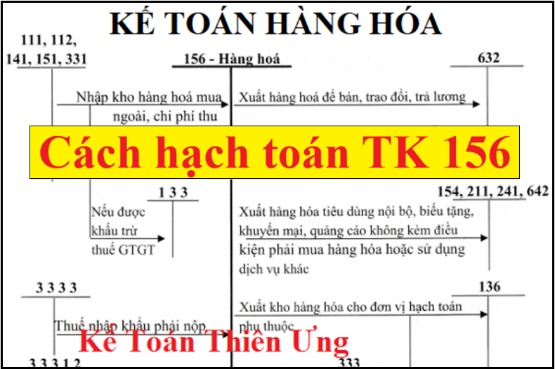

Hướng dẫn cách hạch toán hàng hóa - Tài khoản 156 áp dụng chế độ kế toán theo Thông tư 99/2025/TT-BTC mới nhất 2026, hạch toán hàng mua nhập kho, nhập khẩu, hàng thuê ngoài gia công, hàng bán trả lại, nhận được chiết khấu thương mại, hàng khuyến mãi, hàng cho biếu tặng, tiêu dùng nội bộ ...
1. Nguyên tắc kế toán Tài khoản 156 - Hàng hóa
a) Tài khoản này dùng để phản ánh giá trị hiện có và tình hình biến động tăng, giảm các loại hàng hóa của doanh nghiệp bao gồm hàng hóa tại các kho hàng, quầy hàng, hàng hóa bất động sản và các tài sản khác được nắm giữ hoặc mua để bán lại (trừ chứng khoán kinh doanh), ví dụ như: thẻ điện thoại, quyền sử dụng dịch vụ, quyền nhận hàng hóa, phiếu quà tặng, phiếu giảm giá,... Hàng hóa tại các kho hàng, quầy hàng là các loại vật tư, sản phẩm do doanh nghiệp mua về với mục đích để bán (bán buôn và bán lẻ). Hàng hóa bất động sản gồm: Quyền sử dụng đất; nhà; hoặc nhà và quyền sử dụng đất; cơ sở hạ tầng mua để bán trong kỳ hoạt động kinh doanh thông thường; BĐSĐT chuyển thành hàng tồn kho khi chủ sở hữu bắt đầu triển khai cho mục đích bán.
Trường hợp hàng hóa mua về vừa dùng để bán, vừa dùng để làm nguyên vật liệu cho sản xuất, kinh doanh mà không phân biệt được rõ ràng mục đích để bán hay để sử dụng thì phản ánh vào Tài khoản 152 - Nguyên liệu, vật liệu.
Trong giao dịch xuất nhập - khẩu ủy thác hàng hóa, tài khoản này chỉ sử dụng tại bên giao ủy thác, không sử dụng tại bên nhận ủy thác (bên nhận giữ hộ). Việc kế toán mua, bán hàng hóa liên quan đến các giao dịch bằng ngoại tệ được thực hiện theo hướng dẫn tại Tài khoản 413 - Chênh lệch tỷ giá hối đoái.
b) Những trường hợp sau đây không phản ánh vào Tài khoản 156 - Hàng hóa:
- Hàng hóa nhận bán hộ, nhận giữ hộ cho các doanh nghiệp khác;
- Hàng mua về dùng làm nguyên vật liệu, công cụ dụng cụ phục vụ cho hoạt động sản xuất, kinh doanh (ghi vào các Tài khoản 152 - Nguyên liệu, vật liệu hoặc Tài khoản 153 - Công cụ, dụng cụ,...).
c) Kế toán nhập, xuất, tồn kho hàng hóa trên Tài khoản 156 được phản ánh theo nguyên tắc giá gốc quy định trong Chuẩn mực kế toán Việt Nam số 02 - Hàng tồn kho. Giá gốc hàng hóa mua vào, bao gồm: Giá mua, chi phí thu mua, thuế nhập khẩu, thuế tiêu thụ đặc biệt, thuế bảo vệ môi trường (nếu có), thuế GTGT hàng nhập khẩu (nếu không được khấu trừ). Trường hợp doanh nghiệp mua hàng hóa về để bán lại nhưng vì lý do nào đó cần phải gia công, sơ chế, tân trang, phân loại chọn lọc để làm tăng thêm giá trị hoặc khả năng bán của hàng hóa thì trị giá hàng mua gồm cả chi phí gia công, sơ chế.
- Giá gốc của hàng hóa mua vào được tính theo từng nguồn nhập và tùy theo đặc điểm hoạt động sản xuất kinh doanh và yêu cầu quản lý của doanh nghiệp, giá gốc của hàng hóa có thể được theo dõi chi tiết theo giá mua và chi phí thu mua hàng hóa.
Chi phí thu mua hàng hóa bao gồm các chi phí liên quan trực tiếp đến quá trình thu mua hàng hóa như: Chi phí bảo hiểm hàng hóa, tiền thuê kho, thuê bến bãi, chi phí vận chuyển, bốc xếp, bảo quản đưa hàng hóa từ nơi mua về đến kho doanh nghiệp, các khoản hao hụt tự nhiên trong định mức phát sinh trong quá trình thu mua hàng hóa,...
Đối với chi phí thu mua liên quan đến nhiều hàng hóa thì có thể phân bổ cho từng loại, mặt hàng theo tiêu thức phân bổ cho phù hợp và phải đảm bảo nguyên tắc nhất quán theo quy định của Chuẩn mực kế toán Việt Nam. Trường hợp chi phí thu mua hàng hóa có giá trị nhỏ liên quan đến nhiều mặt hàng thì doanh nghiệp có thể ghi nhận ngay vào giá vốn hàng bán.
d) Kế toán chi tiết hàng hóa phải thực hiện theo từng kho, từng loại, từng hàng hóa và phải theo dõi chi tiết số lượng và giá trị.
2. Kết cấu và nội dung Tài khoản 156 - Hàng hóa
|
Bên Nợ |
Bên Có |
|
- Giá gốc của hàng hóa mua về nhập kho theo từng nguồn nhập;
- Trị giá của hàng hóa thuê ngoài gia công (gồm giá mua vào và chi phí gia công);
- Trị giá hàng hóa đã bán bị người mua trả lạ;
- Trị giá hàng hóa phát hiện thừa khi kiểm kê;
- Trị giá hàng hóa bất động sản mua vào hoặc chuyển từ BĐSĐT sang.
|
- Trị giá của hàng hóa xuất kho để bán, giao đại lý, thuê ngoài gia công, hoặc sử dụng cho sản xuất, kinh doanh,...
- Chiết khấu thương mại, giảm giá được hưởng của hàng hóa mua về;
- Trị giá hàng hóa trả lại cho người bán;
- Trị giá hàng hóa phát hiện thiếu khi kiểm kê;
- Trị giá hàng hóa bất động sản đã bán hoặc chuyển thành BĐSĐT, bất động sản chủ sở hữu sử dụng hoặc TSCĐ.
|
| Số dư bên Nợ: Trị giá thực tế của hàng hóa tồn kho tại thời điểm kết thúc kỳ kế toán. |
Doanh nghiệp có thể mở thêm các tài khoản chi tiết hàng hóa (như: các loại hàng hóa do doanh nghiệp mua về, hàng hóa bất động sản,...) phù hợp với đặc điểm hoạt động sản xuất, kinh doanh và yêu cầu quản lý của đơn vị mình.
3. Cách hạch toán hàng hóa một số nghiệp vụ:
|
3.1. Hàng hóa mua ngoài nhập kho doanh nghiệp, căn cứ hóa đơn, phiếu nhập kho và các chứng từ có liên quan:
a) Khi mua hàng hóa về nhập kho, ghi:
Nợ TK 156 - Hàng hóa (chi tiết hàng hóa mua vào)
Nợ TK 133 - Thuế GTGT được khấu trừ (1331) (nếu có)
Có các TK 111, 112, 141, 331,... (tổng giá thanh toán).
b) Khi nhập khẩu hàng hóa:
- Khi nhập khẩu hàng hóa, ghi:
Nợ TK 156 - Hàng hóa
Có TK 331 - Phải trả cho người bán
Có TK 3331 - Thuế GTGT phải nộp (33312) (nếu thuế GTGT đầu vào của hàng nhập khẩu không được khấu trừ)
Có TK 3332 - Thuế tiêu thụ đặc biệt (nếu có)
Có TK 3333 - Thuế xuất, nhập khẩu (chi tiết thuế nhập khẩu)
Có TK 33381 - Thuế bảo vệ môi trường (nếu có).
- Nếu thuế GTGT đầu vào của hàng nhập khẩu được khấu trừ, ghi:
Nợ TK 133 - Thuế GTGT được khấu trừ
Có TK 3331 - Thuế GTGT phải nộp (33312).
- Trường hợp mua hàng hóa có ứng trước cho người bán một phần bằng ngoại tệ thì phần giá trị hàng mua tương ứng với số tiền ứng trước được ghi nhận theo tỷ giá giao dịch thực tế tại thời điểm ứng trước. Phần giá trị hàng mua bằng ngoại tệ chưa trả được ghi nhận theo tỷ giá giao dịch thực tế tại thời điểm nhận hàng hóa.
- Mua hàng hóa dưới hình thức ủy thác nhập khẩu thực hiện theo quy định ở Tài khoản 331 - Phải trả cho người bán.
- Mua hàng dưới hình thức uỷ thác nhập khẩu, chi tiết xem tại đây:
3.2. Trường hợp doanh nghiệp đã nhận được hóa đơn của người bán nhưng đến thời điểm kết thúc kỳ kế toán, hàng hóa chưa về nhập kho thì căn cứ vào hóa đơn, ghi:
Nợ TK 151 - Hàng mua đang đi đường
Nợ TK 133 - Thuế GTGT được khấu trừ (nếu có)
Có các TK 111, 112, 331,...
- Sang kỳ kế toán sau, khi hàng mua đang đi đường về nhập kho, ghi:
Nợ TK 156 - Hàng hóa
Có TK 151 - Hàng mua đang đi đường.
3.3. Trường hợp doanh nghiệp được nhận khoản chiết khấu thương mại hoặc giảm giá sau khi mua hàng thì doanh nghiệp phải căn cứ vào tình hình biến động của hàng hóa để phân bổ số chiết khấu thương mại, giảm giá hàng bán được hưởng dựa trên số hàng còn tồn kho, số đã xuất bán trong kỳ:
Nợ các TK 111, 112, 331,...
Có TK 156 - Hàng hóa (nếu hàng còn tồn kho)
Có TK 632 - Giá vốn hàng bán (nếu đã tiêu thụ trong kỳ)
3.4. Giá trị của hàng hóa mua ngoài không đúng quy cách, phẩm chất theo hợp đồng kinh tế phải trả lại cho người bán, ghi:
Nợ các TK 111, 112, 331,...
Có TK 156 - Hàng hóa
Có TK 133 - Thuế GTGT được khấu trừ (1331) (nếu có).
3.5. Phản ánh chi phí thu mua hàng hóa, ghi:
Nợ TK 156 - Hàng hóa (nếu tính vào giá trị hàng hóa mua về)
Nợ TK 632 - Giá vốn hàng bán (nếu tính vào giá vốn hàng bán)
Nợ TK 133 - Thuế GTGT được khấu trừ (nếu có)
Có các TK 111, 112, 141, 331,...
3.6. Khi mua hàng hóa theo phương thức trả chậm, trả góp, ghi:
Nợ TK 156 - Hàng hóa (theo giá mua trả tiền ngay)
Nợ TK 133 - Thuế GTGT được khấu trừ (nếu có)
Có các TK 111, 112 (số đã trả ngay)
Có TK 331 - Phải trả cho người bán.
- Định kỳ, phản ánh khoản lãi trả chậm, trả góp phải trả cho người bán, ghi:
Nợ TK 635 - Chi phí tài chính
Có TK 331 - Phải trả cho người bán.
- Định kỳ, khi trả tiền cho người bán bao gồm cả nợ gốc và tiền lãi trả chậm, trả góp, ghi:
Nợ TK 331- Phải trả cho người bán
Có các TK 111,112
3.7. Khi mua hàng hóa bất động sản về để bán, doanh nghiệp phản ánh giá mua và các chi phí liên quan trực tiếp đến việc mua hàng hóa BĐS, ghi:
Nợ TK 156 - Hàng hóa
Nợ TK 133 - Thuế GTGT được khấu trừ (1332) (nếu có)
Có các TK 111, 112, 331,...
3.8. Trường hợp BĐSĐT chuyển thành hàng tồn kho khi chủ sở hữu có quyết định sửa chữa, cải tạo, nâng cấp để bán:
- Khi có quyết định sửa chữa, cải tạo, nâng cấp BĐSĐT để bán, ghi:
Nợ TK 156 - Hàng hóa (giá trị còn lại của BĐSĐT)
Nợ TK 214 - Hao mòn TSCĐ (2147) (Số hao mòn lũy kế)
Có TK 217 - Bất động sản đầu tư (nguyên giá).
- Khi phát sinh các chi phí sửa chữa, cải tạo, nâng cấp triển khai cho mục đích bán, ghi:
Nợ TK 154 - Chi phí sản xuất, kinh doanh dở dang
Nợ TK 133 - Thuế GTGT được khấu trừ
Có các TK 111, 112, 152, 334, 331,...
- Khi kết thúc giai đoạn sửa chữa, cải tạo, nâng cấp triển khai cho mục đích bán, kết chuyển toàn bộ chi phí ghi tăng giá trị hàng hóa bất động sản, ghi:
Nợ TK 156 - Hàng hóa
Có TK 154 - Chi phí sản xuất, kinh doanh dở dang.
3.9. Trị giá hàng hóa xuất bán được xác định là tiêu thụ, ghi:
Nợ TK 632 - Giá vốn hàng bán
Có TK 156 - Hàng hóa.
Đồng thời doanh nghiệp phản ánh doanh thu bán hàng:
- Đối với hàng hóa thuộc đối tượng chịu thuế gián thu (thuế GTGT, thuế tiêu thụ đặc biệt, thuế xuất khẩu, thuế bảo vệ môi trường), doanh nghiệp phản ánh doanh thu bán hàng và cung cấp dịch vụ theo giá bán chưa có thuế, các khoản thuế gián thu phải nộp được tách riêng theo từng loại thuế ngay khi ghi nhận doanh thu, ghi:
Nợ các TK 111, 112, 131,...
Có TK 511 - Doanh thu bán hàng và cung cấp dịch vụ (giá chưa có thuế)
Có TK 333 - Thuế và các khoản phải nộp Nhà nước.
- Trường hợp các khoản thuế phải nộp không tách riêng ngay theo từng loại, doanh nghiệp ghi nhận doanh thu bao gồm cả thuế phải nộp. Định kỳ, doanh nghiệp xác định nghĩa vụ thuế phải nộp và ghi giảm doanh thu, ghi:
Nợ TK 511 - Doanh thu bán hàng và cung cấp dịch vụ
Có TK 333 - Thuế và các khoản phải nộp Nhà nước.
3.10. Trường hợp thuê ngoài gia công, chế biến hàng hóa:
- Khi xuất kho hàng hóa đưa đi gia công, chế biến, ghi:
Nợ TK 154 - Chi phí sản xuất, kinh doanh dở dang
Có TK 156 - Hàng hóa.
- Chi phí gia công, chế biến hàng hóa, ghi:
Nợ TK 154 - Chi phí sản xuất, kinh doanh dở dang
Nợ TK 133 - Thuế GTGT được khấu trừ (nếu có)
Có các TK 111, 112, 331,...
- Khi gia công xong nhập lại kho hàng hóa, ghi:
Nợ TK 156 - Hàng hóa
Có TK 154 - Chi phí sản xuất, kinh doanh dở dang.
3.11. Khi xuất kho hàng hóa gửi cho khách hàng hoặc xuất kho cho các đại lý, doanh nghiệp nhận hàng ký gửi,..., ghi:
Nợ TK 157 - Hàng gửi đi bán
3.12. Khi xuất kho hàng hóa cho các đơn vị trực thuộc để bán:
- Trường hợp đơn vị trực thuộc được phân cấp ghi nhận doanh thu, giá vốn, đơn vị ghi nhận giá vốn hàng hóa xuất bán, ghi:
Nợ TK 632 - Giá vốn hàng bán
Có TK 156 - Hàng hóa
Có TK 333 - Thuế và các khoản phải nộp Nhà nước (nếu có).
- Trường hợp đơn vị trực thuộc không được phân cấp ghi nhận doanh thu, giá vốn, đơn vị ghi nhận giá trị hàng hóa luân chuyển giữa các khâu trong nội bộ doanh nghiệp là khoản phải thu nội bộ, ghi:
Nợ TK 136 - Phải thu nội bộ (1368)
Có TK 156 - Hàng hóa
Có TK 333 - Thuế và các khoản phải nộp Nhà nước (nếu có).
3.13. Khi xuất hàng hóa tiêu dùng nội bộ, ghi:
Nợ các TK 641, 642, 241, 211,...
Có TK 156 - Hàng hóa
Có TK 333 - Thuế và các khoản phải nộp Nhà nước (nếu có).
3.14. Trường hợp doanh nghiệp sử dụng hàng hóa để khuyến mại, quảng cáo, cho biếu, tặng:
a) Trường hợp xuất hàng hóa để khuyến mại, quảng cáo không thu tiền, không kèm theo các điều kiện khác như phải mua sản phẩm, hàng hóa... hoặc theo mô hình kinh doanh, đặc điểm hàng hóa của doanh nghiệp là giá bán hàng hóa chính không thay đổi cho dù khách hàng có nhận hay không nhận sản phẩm, hàng hóa tặng kèm thì doanh nghiệp ghi nhận giá trị hàng hóa dùng cho khuyến mại, quảng cáo vào chi phí bán hàng, ghi:
Nợ TK 641 - Chi phí bán hàng
Có TK 156 - Hàng hóa.
b) Trường hợp xuất hàng hóa để khuyến mại, quảng cáo nhưng khách hàng chỉ được nhận hàng khuyến mại, quảng cáo kèm theo các điều kiện khác như phải mua hàng hóa (ví dụ như mua 2 sản phẩm được tặng 1 sản phẩm...) thì doanh nghiệp phải phân bổ số tiền thu được để tính doanh thu cho cả hàng khuyến mại. Bản chất giao dịch này là giảm giá hàng bán nên giá trị hàng khuyến mại được tính vào giá vốn hàng bán.
- Khi xuất hàng khuyến mại, doanh nghiệp ghi nhận giá trị hàng khuyến mại vào giá vốn hàng bán, ghi:
Nợ TK 632 - Giá vốn hàng bán
Có TK 156 - Hàng hóa.
- Ghi nhận doanh thu của hàng khuyến mại trên cơ sở phân bổ số tiền thu được cho cả hàng hóa chính được bán và hàng hóa khuyến mại, quảng cáo, ghi:
Nợ các TK 111, 112, 131...
Có TK 511 - Doanh thu bán hàng và cung cấp dịch vụ
Có TK 3331 - Thuế GTGT phải nộp (33311) (nếu có).
c) Nếu xuất hàng hóa biếu, tặng cho người lao động được trang trải bằng quỹ khen thưởng, phúc lợi, doanh nghiệp phải ghi nhận doanh thu, giá vốn như giao dịch bán hàng thông thường, ghi:
- Ghi nhận giá vốn hàng bán đối với hàng hóa dùng để biếu, tặng cho người lao động, ghi:
Nợ TK 632 - Giá vốn hàng bán
Có TK 156 - Hàng hóa.
- Ghi nhận doanh thu của hàng hóa được trang trải bằng quỹ khen thưởng, phúc lợi, ghi:
Nợ TK 353 - Quỹ khen thưởng, phúc lợi (tổng giá thanh toán)
Có TK 511 - Doanh thu bán hàng và cung cấp dịch vụ
Có TK 3331 - Thuế GTGT phải nộp (33311) (nếu có).
d) Nếu xuất kho hàng hóa để cho, biếu, tặng, ghi:
Nợ các TK 641, 642,...
Có TK 156 - Hàng hóa
Có TK 3331 - Thuế GTGT phải nộp (33311) (nếu có).
3.15. Kế toán trả lương cho người lao động bằng hàng hóa:
- Doanh nghiệp ghi nhận doanh thu, ghi:
Nợ TK 334 - Phải trả người lao động (tổng giá thanh toán)
Có TK 511 - Doanh thu bán hàng và cung cấp dịch vụ
Có TK 333 - Thuế và các khoản phải nộp Nhà nước (nếu có)
Có TK 3335 - Thuế thu nhập cá nhân (nếu có).
- Ghi nhận giá vốn hàng bán đối với giá trị hàng hóa dùng để trả lương cho người lao động, ghi:
Nợ TK 632 - Giá vốn hàng bán
Có TK 156 - Hàng hóa.
3.16. Hàng hóa đưa đi góp vốn vào công ty con, công ty liên doanh, liên kết, đầu tư khác, ghi:
Nợ các TK 221, 222,228 (theo giá đánh giá lại)
Nợ TK 811 - Chi phí khác (chênh lệch giữa giá đánh giá lại nhỏ hơn giá trị ghi sổ của hàng hóa)
Có TK 156 - Hàng hóa
Có TK 711 - Thu nhập khác (chênh lệch giữa giá đánh giá lại lớn hơn giá trị ghi sổ của hàng hóa).
3.17. Cuối kỳ, khi phân bổ chi phí thu mua cho hàng hóa được xác định là bán trong kỳ, ghi:
Nợ TK 632 - Giá vốn hàng bán
Có TK 156 - Hàng hóa.
3.18. Mọi trường hợp phát hiện thừa, thiếu hàng hóa bất kỳ ở khâu nào trong kinh doanh phải lập biên bản và truy tìm nguyên nhân. Doanh nghiệp căn cứ vào việc hàng hóa thừa, thiếu đã rõ hay chưa rõ nguyên nhân để xử lý và hạch toán tương tự như hướng dẫn tại Tài khoản 152 - Nguyên liệu, vật liệu.
3.19. Trị giá hàng hóa bất động sản được xác định là bán trong kỳ, căn cứ hóa đơn GTGT hoặc hóa đơn bán hàng, biên bản bàn giao hàng hóa BĐS:
- Phản ánh giá vốn, ghi:
Nợ TK 632 - Giá vốn hàng bán
Có TK 156 - Hàng hóa.
Đồng thời doanh nghiệp phản ánh doanh thu bán hàng hóa BĐS:
Nợ các TK 111, 112, 131,...
Có TK 511 - Doanh thu bán hàng và cung cấp dịch vụ
Có TK 3331 - Thuế GTGT phải nộp (33311) (nếu có).
3.20. Phản ánh giá vốn hàng hóa thanh lý, khi nhượng bán do ứ đọng, mất phẩm chất, không cần dùng,..., ghi:
Nợ TK 632 - Giá vốn hàng bán
Có TK 156 - Hàng hóa.
|
Công ty Kế toán Diệu Tâm chúc các bạn thành công!
-----------------------------------------------------------------
